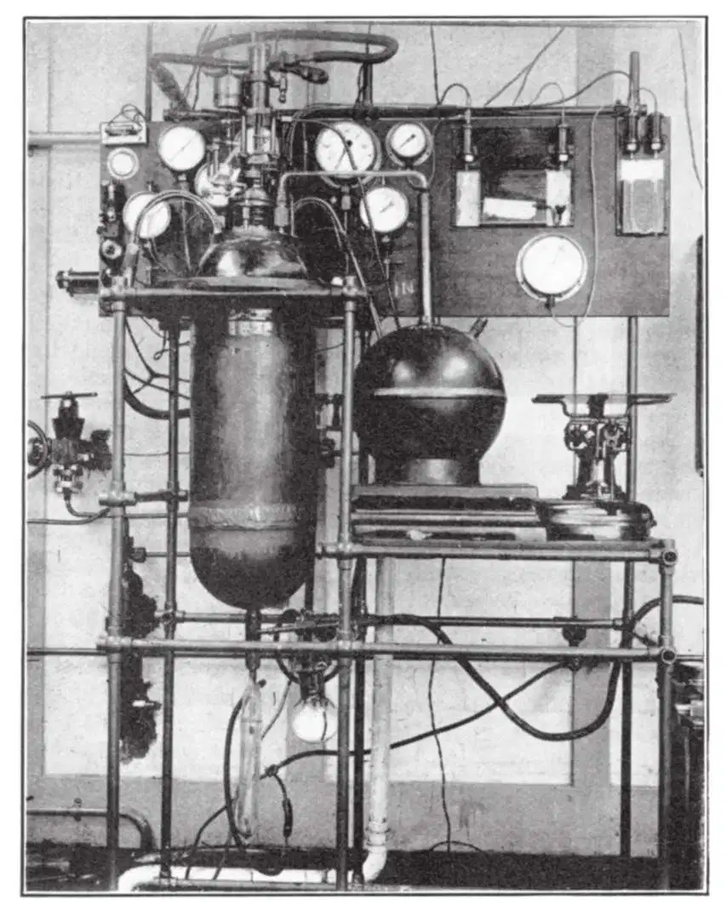

中文
中文P. Kapitza
Editor’s Note
Russian physicist Pyotr Kapitza reports on a new technique for liquefying hydrogen and helium, developed by himself and colleagues in Cambridge. These substances, so useful for modern physics research, were still being liquefied by methods dating from the beginning of the century. But his group had now developed a method based primarily on adiabatic expansion, in which no heat is lost or gained in the process. Their design eliminated the need for lubricants capable of working at such low temperatures, and could produce up to one litre per hour. The method would soon provide abundant supplies of liquid helium and hydrogen for low-temperature physics. 中文
THE methods for the continuous liquefaction of hydrogen and helium at present in use are essentially the same as those originally used by Dewar and Kamerlingh Onnes when these gases were first liquefied. These methods are based on the use of the Joule–Thomson effect, combined with a regenerating heat exchange after the gas has been cooled below its conversion temperature by liquid air or hydrogen. Since these processes are essentially nonreversible, the efficiency of the method is very low: for example, Meissner1 calculates that to produce liquid helium, one hundred times more power is required than if the process could be done reversibly. The advantages to be gained by using adiabatic expansion for the cooling of liquefying gases have long been realised, but owing to technical difficulties this method has only been used up to the present to liquefy small amounts of gas by a single expansion. Thus in 1895, Olszewski was the first to obtain a fog of liquid hydrogen drops by a sudden expansion of compressed hydrogen. Recently, Simon2 has produced appreciable quantities of liquid helium also by a sudden expansion of highly compressed helium. 中文
The technical difficulties in constructing an apparatus for continuous liquefaction by adiabatic expansion lie chiefly in the designing of a cooling expansion engine which will work at low temperatures. Two principal types of expansion engine can be considered. The first is a turbine, but this involves a number of technical difficulties which have not yet been overcome. The second type of machine is a reciprocating moving piston expansion engine; this also involves great difficulties, chiefly arising from the difficulty of finding a lubricant which will make the piston tight in the cylinder and retain its lubricating properties at the very low temperatures. Claude, however, managed to make such an expansion engine which would work at the temperature of liquid air by using the liquefied gas as the lubricant. This method, however, does not appear to be practicable for liquefying helium and hydrogen. 中文
During the last year, in our laboratory we have been working on the development of a reciprocating expansion engine working on a different principle which does not require any lubrication of the piston at all, and which will work at any temperature. The main feature of the method is that the piston is loosely fitted in the cylinder with a definite clearance, and when the gas in introduced into the cylinder at high pressure, it is allowed to escape freely through the gap between the cylinder and the piston. The expansion engine is arranged in such a way that the piston moves very rapidly on the expanding stroke, and the expansion takes place in such a small fraction of a second that the amount of gas escaping through the gap is very small and does not appreciably affect the efficiency of the machine. 中文

Fig. 1. Helium liquefaction apparatus at the Royal Society Mond Laboratory. 中文
The principal difficulty in constructing such a machine was concerned with the valves in the expansion engine, which had to let in a considerable amount of gas in a small fraction of a second. Another difficulty was to find metals with the necessary mechanical properties for use at these low temperatures. All these difficulties have now been successfully overcome, and the liquefier is shown in the accompanying photograph (Fig. 1). The expansion engine is placed in the middle of the evacuated cylindrical copper casing, the dimensions of which are 75 cm. long and 25 cm. diameter. The casing also contains heat-exchanging spirals and a container of liquid air for the preliminary cooling of the helium. Helium is compressed to 25–30 atmospheres and is first cooled to the temperature of liquid air and then cooled by the expansion engine and regenerating spiral to about 8°K.; the final liquefaction is produced by making use of the Joule–Thomson effect. This combination proves to be the most efficient method of liquefaction. The liquid helium is drawn off from the bottom of the liquefier by means of a tap. 中文
Following the preliminary cooling to the temperature of liquid nitrogen, the liquefier starts after 45 minutes to liquefy helium at a rate of 1 litre per hour, consuming about 3 litres of liquid air per litre of liquid helium. This output we hope will shortly be increased, but even now it compares very favourably with the original method of making liquid helium, in which, according to Meissner (loc. cit.), the consumption is 6 litres of liquid air plus 5 litres of liquid hydrogen per litre of liquid helium. It is also evidently a considerable advantage to be able to dispense with liquid hydrogen as a preliminary cooling agent. Theoretically it would be possible in our case also to dispense with liquid air, but the size of the liquefier would then be impracticably large. Using liquid hydrogen as a cooling agent, the output of the liquefier could be increased about six times. 中文
The same liquefier has also been used for liquefying hydrogen, which was passed through a special circuit under a pressure of a few atmospheres. 中文
A detailed description of the apparatus will shortly be published elsewhere. 中文
(133, 708-709; 1934)
P. Kapitza: F.R.S., Royal Society Mond Laboratory, Cambridge.
References:
1. “Handbuch der Physik.” Geiger and Scheel, vol. 11, p. 328.
2. Z. Phys., 81, 816; 1933.